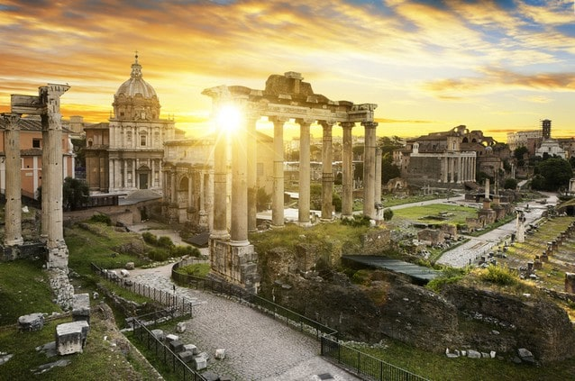
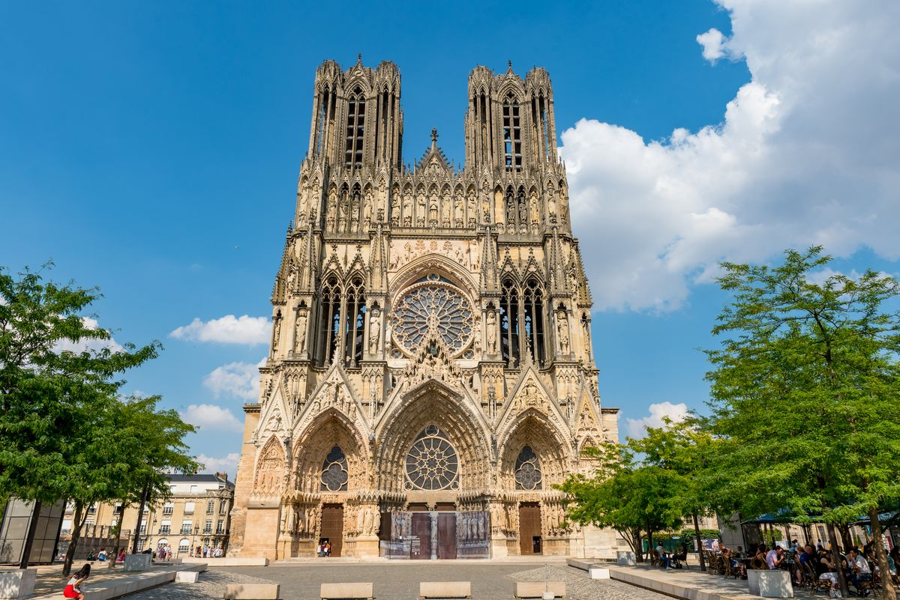
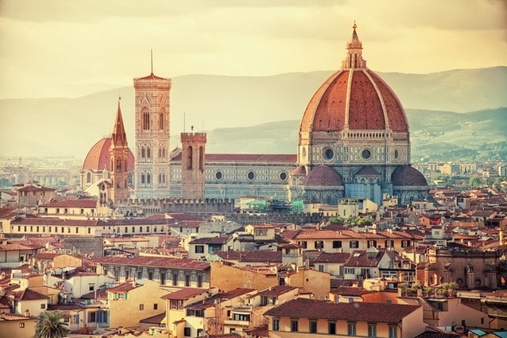
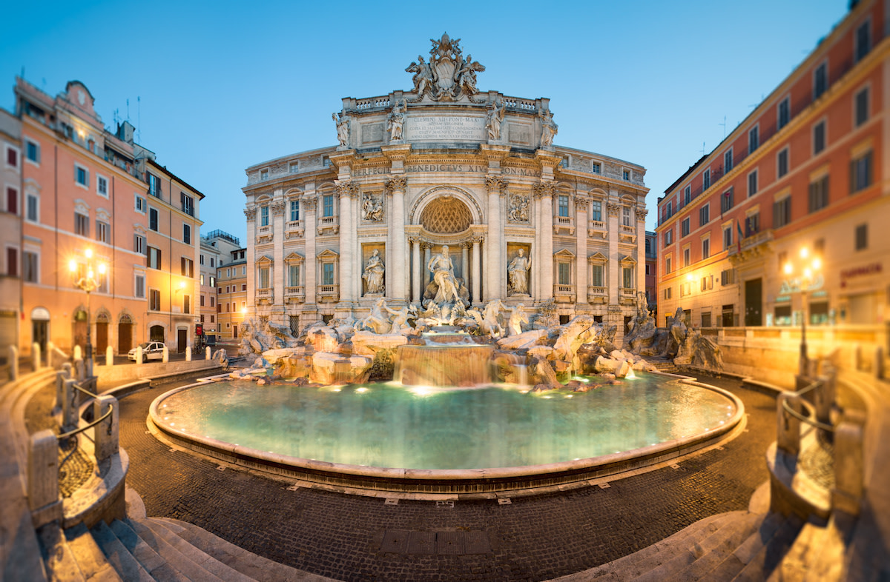

Itálie má jednu z nejbohatších a nejvlivnějších historií na světě. Od legendárního založení Říma přes slávu římské říše, přes období středověkých městských států až po renesanci, kdy se Itálie stala kulturním centrem Evropy.
Během staletí se na jejím území střídala různá království a mocnosti, až se nakonec v 19. století sjednotila v jeden stát. Dnes je Itálie moderní republikou, ale stopy její slavné minulosti jsou vidět téměř na každém kroku – od antických památek až po umění a architekturu.
Datování: přibližně 8. století př. n. l. – 5. století n. l.
Umělecké a kulturní období starověkého Řecka a Říma. Vyznačuje se harmonií, proporcí, racionalitou a ideálem krásy.
Vyznačuje se vysokými katedrálami, štíhlými sloupy a barevnými vitrážemi. Příkladem je Dóm v Miláně. Umělci se začínali více zajímat o realističnost a duchovno.
Vrchol italského umění – Michelangelo, Leonardo da Vinci a Botticelli. Důraz na lidské tělo, perspektivu a návrat ke klasickým ideálům.
Dramatické, bohaté a expresivní umění. Bernini a Caravaggio jsou klíčové osobnosti. Umění sloužilo církvi a propagandě.
